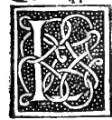

CHAPTER XXXIII¶
On the Proportion of the Surfaces and Solid Volumes of All the Regular Bodies to One Another.

Continuing with the fourteenth book of our author (with the additions and commentaries of Campanus), we summarize how the surfaces and volumes of the other regular bodies—the tetracedron, the cube, and the octocedron—are compared when inscribed in the same sphere ([XIV.9], [XIV.10]).
Proportions of the Tetrahedron, Cube, and Octahedron in the Same Sphere
Edges in the Same Sphere (recapitulating [XIII.18]):
If the diameter of the sphere is \(D\), then:
\[s_{\text{tetra}}^{2} = \frac{2}{3}D^{2}, \qquad s_{\text{octa}}^{2} = \frac{1}{2}D^{2}, \qquad s_{\text{cube}}^{2} = \frac{1}{3}D^{2}\]
Inscribed Spheres (Perpendiculars from the Center to the Faces):
In the cube, the distance from the center of the sphere to each of its six square faces is half the edge of the cube (\(r_{6} = \frac{1}{2}s_{\text{cube}}\)), so \(r_{6}^{2} = \frac{1}{12}D^{2}\).
In the octocedron, each of the eight faces is an equilateral triangle of side \(s_{\text{octa}}\) whose circumcircle has radius \(\rho_{8}\) satisfying \(s_{\text{octa}}^{2} = 3\,\rho_{8}^{2}\) ([XIII.12]), so \(\rho_{8}^{2} = \frac{1}{6}D^{2}\). Therefore, the perpendicular from the center of the sphere to a face of the octocedron satisfies \(r_{8}^{2} = \left(\frac{1}{2}D\right)^{2} - \rho_{8}^{2} = \frac{1}{4}D^{2} - \frac{1}{6}D^{2} = \frac{1}{12}D^{2}\)!
Marvelous Equality: Therefore, the perpendicular from the center of the sphere to a face of the cube is exactly equal to the perpendicular from the center of the sphere to a face of the octocedron (\(r_{6} = r_{8} = \frac{D}{\sqrt{12}}\))! Just as one and the same inner sphere touches the faces of both the duodecedron and the ycocedron (Chapter XXXII), so another single inner sphere touches the faces of both the cube and the octocedron!
In the tetracedron, the circumcircle of each triangular face of side \(s_{\text{tetra}}\) has \(\rho_{4}^{2} = \frac{1}{3}s_{\text{tetra}}^{2} = \frac{2}{9}D^{2}\), so the perpendicular from the center of the sphere to a face of the tetracedron satisfies \(r_{4}^{2} = \frac{1}{4}D^{2} - \frac{2}{9}D^{2} = \frac{1}{36}D^{2}\), whence \(r_{4} = \frac{1}{6}D\) (one-sixth of the sphere’s diameter, or one-third of its radius, and one-fourth of the altitude of the tetracedron!).
Volume and Surface Proportions of Cube and Octahedron:
Because the cube and the octocedron have the exact same insphere radius \(r_{6} = r_{8}\), the ratio of the solid volume of the cube to the solid volume of the octocedron is identical to the ratio of the total surface area of the six squares of the cube to the total surface area of the eight triangles of the octocedron:
\[\frac{\text{Vol}(\text{Cube})}{\text{Vol}(\text{:term:`Octahedron <octahedron>`})} = \frac{\text{Area}(\text{Cube})}{\text{Area}(\text{:term:`Octahedron <octahedron>`})} = \frac{6 \cdot \frac{1}{3}D^{2}}{8 \cdot \frac{\sqrt{3}}{4} \cdot \frac{1}{2}D^{2}} = \frac{2}{\sqrt{3}} = \sqrt{\frac{4}{3}}\]
Volume Proportion of Tetrahedron and Octahedron:
Comparing their bases and altitudes, the solid volume of the octocedron to that of the tetracedron inscribed in the same sphere is \(\frac{\frac{1}{6}D^{3}}{\frac{2}{27}\sqrt{3}\,D^{3}} = \frac{9}{4\sqrt{3}} = \frac{3\sqrt{3}}{4}\).
As for the detailed numerical rules for finding the exact surface areas and volumes of all five bodies when a given measure in braccia or piedi is assigned to their edges or to the sphere’s diameter, we have treated them at full length in our great work (Summa de Arithmetica, Geometria, Proportioni e Proportionalita, Venice, 1494) and in the particular treatise dedicated to your illustrious kinsman Guidobaldo, Duke of Urbino (Tractato de’ Corpi Regulari).